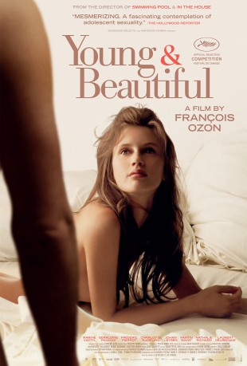
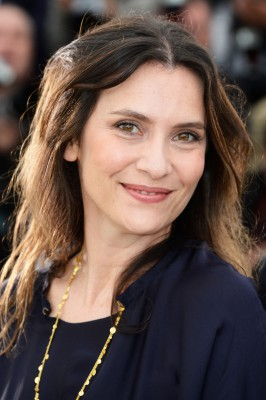
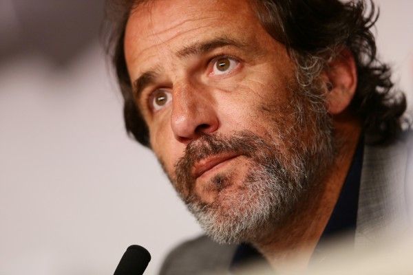

#3284 Jung & schön
Alternativ: Young & Beautiful (Englischer Titel)
 
 IMDB-Wertung: 6.8 / 10
IMDB-Wertung: 6.8 / 10  Metascore: 63
Metascore: 63 
Im Sommerurlaub, wenige Tage vor ihrem 17. Geburtstag, schläft die hübsche Isabelle das erste Mal mit einem Jungen. Für viele Mädchen ein großes Ereignis, lässt sie diese Nacht jedoch völlig kalt. Dennoch erkennt sie die Möglichkeiten, die der Austausch körperlicher Zärtlichkeiten ihr bietet: Mit Beginn des Schuljahres verabredet sie sich mit meist älteren Männern, die sie für Sex bezahlen. 300 Euro pro Nacht lassen es sich die Männer kosten. Während Isabelle an immer mehr Geld kommt, ahnen weder Eltern noch Freunde etwas von ihrem Doppelleben. Nach einem tragischen Zwischenfall kann sie ihr Geheimnis jedoch nicht mehr verbergen und ihre Nachmittagsbeschäftigung fliegt auf. Da Isabelle selbst nicht dazu Stellung bezieht, sondern beharrlich schweigt, ergeht sich ihre Mutter vornehmlich in Selbstvorwürfen.
Jahr: 2013
Dauer: 93 Minuten
FSK: 16
Land: Frankreich Studio: Weltkino FilmverleihTonspuren:
Untertitel: Deutsch,
Auflösung: 1080p (1920x1040) Größe: 6717 MB
Genre: Drama
Regisseur: François Ozon
Drehbuch: François Ozon
Soundtrack: Philippe Rombi
Darsteller:
- Marine Vacth als Isabelle
-  Géraldine Pailhas als Sylvie
-  Frédéric Pierrot als Patrick
- Fantin Ravat als Victor
 Johan Leysen als Georges Ferriere
Johan Leysen als Georges Ferriere Charlotte Rampling als Alice
Charlotte Rampling als Alice- Lucas Prisor als Felix
 Stefano Cassetti als L'homme de l'hôtel
Stefano Cassetti als L'homme de l'hôtel- Iliana Zabeth als Elève du lycée Henri IV
- Yves Bole als
 Nathalie Richard als Véro
Nathalie Richard als Véro- Djedje Apali als Peter
- Laurent Delbecque als Alex
- Jeanne Ruff als Claire
- Carole Franck als La policière
- Olivier Desautel als Le policier
- Serge Hefez als Le psychiatre
- Akéla Sari als Mouna
- Nathan N'Diaye als Nicolas
- Anne-Elina N'Diaye als Lucie
- Patrick Bonnel als L'homme de la Mercedes
- Gurvan Cloatre als Le garçon d'hôtel
- Roland David als L'homme du métro
- Rachel Khan als La laborantine
- Caroline Breton als La fille de Georges
- Charlotte-Victoire Legrain als Elève du lycée Henri IV
- Jules Gruault als Elève du lycée Henri IV
- Lilian Minas als Elève du lycée Henri IV
- Jules Bourbon als Elève du lycée Henri IV
- Ugo Bokhobza als Elève du lycée Henri IV
- Anaïs Clergeau als Elève du lycée Henri IV
- Achille Couderc als Elève du lycée Henri IV
- Tess Girault de Castilla als Elève du lycée Henri IV
- Victor Le Dauphin als Elève du lycée Henri IV
- Coline Mortier als Elève du lycée Henri IV
- Thaïs Becq de Fouquières als Elève du lycée Henri IV
- Mathilde Bleu als Elève du lycée Henri IV
- Victor Boulanger als Elève du lycée Henri IV
- Rosalie Charrier als Elève du lycée Henri IV
- Violette Deffontaines als Elève du lycée Henri IV
- Nassim Gouaini als Elève du lycée Henri IV
- Paul Hadji Lazaro als Elève du lycée Henri IV
- François Haueter als Elève du lycée Henri IV
- Roxane Khodabandehlou als Elève du lycée Henri IV
- Camille Lemoine als Elève du lycée Henri IV
- Zoé Lizot als Elève du lycée Henri IV
- Alice Paulet als Elève du lycée Henri IV
- Marie Sebillotte als Elève du lycée Henri IV
- Vincent Silhol als Elève du lycée Henri IV
- Camille Tilak als Elève du lycée Henri IV
Datei: X:\2013(I-M)\Jung & schön (2013, FSK16, 1920x1040).mkv seit 03.03.2016
Festplatte: HD 2013(I-Z)-2014(A-Z)
 Es gibt insgesamt 89 Filme in der Gruppe '2013(I-M)'
Es gibt insgesamt 89 Filme in der Gruppe '2013(I-M)'